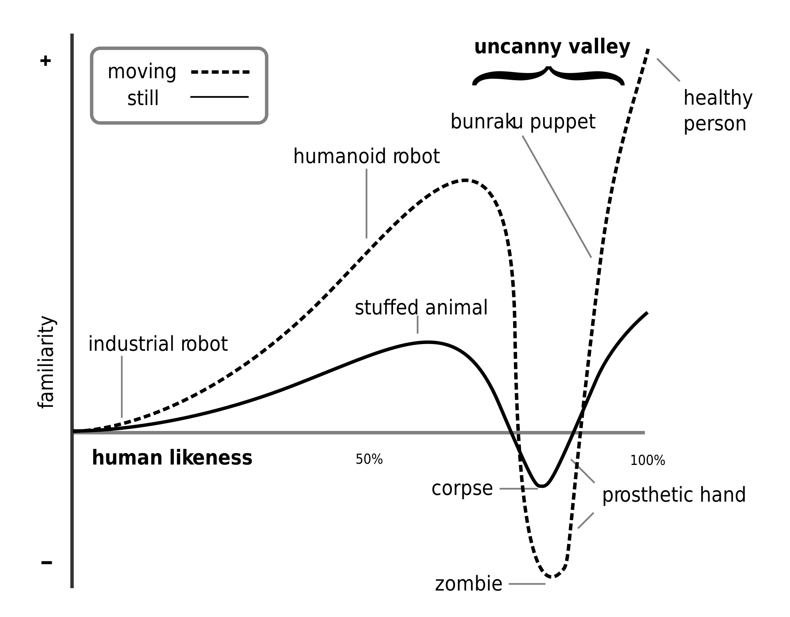

Defining Presence
"Presence is a psychological state of subjective perception in which even though part or all of an individual's current experience is generated by and/or filtered through human-made technology, part or all of the individual's perception fails to accurately acknowledge the role of technology in the experience."
International Society for Presence Research
The Experience of Presence
People experiencing presence feel like they are visiting a place, not perceiving a virtual world
"I don't remember those experiences like I remember games. I don't remember them like anything separate from real life."
The mediating role of technology is "forgotten"
Key Terminology
Presence
The inner, psychological experience of "being" somewhere
Immersion
The objective technology that creates the feeling of presence
Immersion Factors
- Display resolution, frame rate, field of view
- Tracking latency, accuracy, resolution
- Quality of sensory stimuli (visual realism)
- Potential for interaction with environment
- Correspondence with physical body
- Realistic behavior of the virtual world
Three Categories of Presence
- Place Presence — "being there"
- Social Presence — "being with"
- Self Presence — "being" or "being else"
When most people say "presence," they usually mean place presence
Place Presence
Feeling that you are actually in another place
Early experiments explored presence by looking at how users reacted to virtual "pits"
— Meehan et al., 2002

Social Presence
Feeling like a virtual agent is capable of real social interaction
The sense of accessibility of the other being's psychological, emotional, and intentional states
Social Presence Examples
- Being anxious speaking in front of a crowd of virtual humans
- Breaking up a fight if one agent wears your favorite team's jersey
- Maintaining normal interpersonal distances in VR
- Expressing empathy towards a virtual patient
Self Presence
Feeling that a virtual body is actually your own body
Arguably the least explored component of presence
Technological limitations make it challenging to create self avatars
Slater's Two Components
An alternative perspective on presence
Place Illusion (PI)
"I feel as though I am somewhere else"
Largely constrained by immersion
Plausibility Illusion (Psi)
"What I see is actually happening"
Determined by how well the system meets expectations
Sensorimotor vs Ontological
| Sensorimotor Illusion | Ontological Illusion | |
|---|---|---|
| Place | It feels like I am in a virtual environment | I try to put my controllers on a virtual table |
| Social | It feels like Darth Vader is in front of me | Darth Vader is about to kill me |
| Self | It feels like I can see my body in VR | I have a tail, and when it's threatened, I am threatened |
Two Key Questions
- How can we experience presence?
Top-Down Perception Model - Why do we experience presence?
Intention-Action Model
Top-Down Perception Model
VR cannot produce stimuli indistinguishable from reality
All VR stimuli are "impoverished"
How then is VR able to create the feeling that what we see is real?
Perception is Active
Perception combines two processes:
- Bottom-up processing of sensory input
- Top-down processing based on experience, expectations, and beliefs
Example: Color perception is heavily influenced by what we expect something's color to be
Point Light Displays
Johansson's experiments showed that with just point lights, people readily interpret stimuli as humans performing actions
We don't need complete information to understand the world
The "How" of Presence
VR provides enough bottom-up sensory information to support top-down perception based on experience and mental models
Key: Provide enough sensory information to activate the appropriate mental model
Intention-Action Model
Why do we experience presence at all?
Presence is a fundamental part of human experience — we experience it in reality all the time
The "Why" of Presence
"The brain contains a specific cognitive module that binds intentional actions to their effects to construct a coherent conscious experience of our own agency"
Key: Enable the user to accomplish their intentions by acting in VR
Three Types of Measures
- Questionnaires
- Behavioral measures
- Physiological measures
Questionnaires
Common survey instruments
- Place presence: W&S, SUS, ITQ, IPQ
- Social presence: Networked Minds, Bailenson et al.
- Self presence: Avatar Embodiment Questionnaire
Behavioral Measures
Compare observed behavior against expected behavior
Common measures involve threat responses
- Heights
- Fire
- Threatening agents
Self Presence: Behavioral
Body ownership can be measured through threat responses to the virtual body
Physiological Measures
- Skin conductance
- Heart rate
- Skin temperature
- EEG
- Pupillary dilation
Same problem as behavioral: responses can mean different things in different situations
Immersion Meta-Study
Cummings & Bailenson, 2016
Which immersion factors matter most for presence?
- Tracking
- Stereoscopy
- Field of View
- Sound
- Point of View
- Image Quality
Design Principles
Top-Down Model
Provide enough sensory input to satisfy user's mental models
Intention-Action Model
Enable the user to accomplish their goals through action
Creating Place Presence
- Head tracking, body tracking, stereoscopy, FOV
- Low latency, high frame rate
- Let people perform expected actions
- Visual realism doesn't matter much!
Creating Social Presence
- Behavioral realism is top priority
- Conversational accuracy
- Motion is extremely important (hands, head, eyes, body)
- Cartoons can generate strong social presence
- Non-verbal cues, especially gaze
The Uncanny Valley
Creating Self Presence
- Control over virtual body is top priority
- When you move, your virtual body moves
- Proprioceptive sense detects misalignment
- Body ownership works for diverse bodies (tails, blocks of wood!)
- Easier to establish with "realistic" bodies
Key Takeaways
- Presence is feeling like you're there
- Three types: Place, Social, Self
- Tracking matters more than visual fidelity
- Action and interaction are critical
- Mental models fill in the gaps